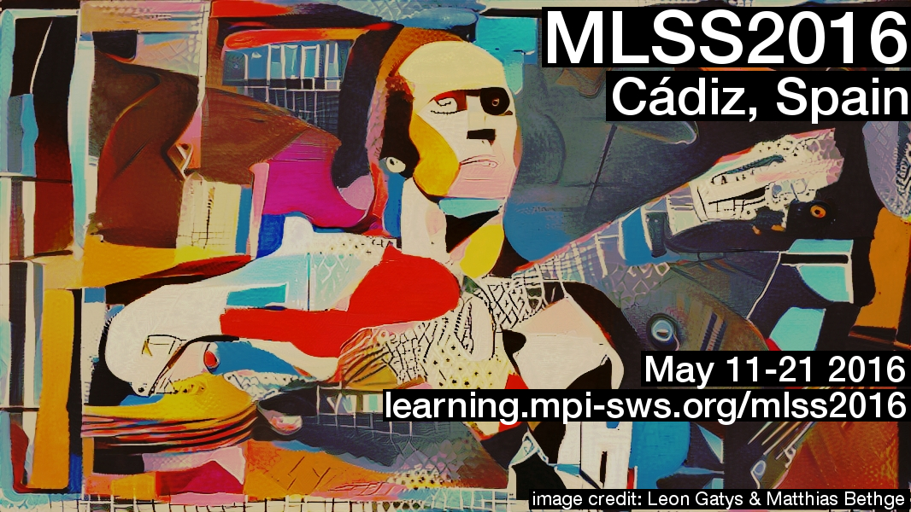

Nonparametric Bayes Tutorial

This tutorial took place at the 2016 Machine Learning Summer School (MLSS) at the University of Cádiz in Cádiz, Spain. See this link for the latest versions and videos of this tutorial.
Monday, May 16
Part I: 9:00–10:30 AM
Part II: 10:45–11:45 AM
Part III: 12:00–1:30 PM
Instructor:
Professor Tamara Broderick
Email: 
Description
Nonparametric Bayesian methods make use of infinite-dimensional mathematical structures to allow the practitioner to learn more from their data as the size of their data set grows. What does that mean, and how does it work in practice? In this tutorial, we'll cover why machine learning and statistics need more than just parametric Bayesian inference. We'll introduce such foundational nonparametric Bayesian models as the Dirichlet process and Chinese restaurant process and touch on the wide variety of models available in nonparametric Bayes. Along the way, we'll see what exactly nonparametric Bayesian methods are and what they accomplish.
Materials
Prerequisites
- Know what a prior, likelihood, and posterior are.
- Know how to use Bayes' Theorem to calculate a posterior for both discrete and continuous parametric distributions.
- Understand what a generative model is.
- Have a basic idea of what Gibbs sampling is and when it is useful (at least check out the Wikipedia article in advance).
What we won't cover
Gaussian processes are an important branch of nonparametric Bayesian modeling, but we won't have time to cover them here. We'll be focusing on the discrete, or Poisson point process, side of nonparametric Bayesian inference.